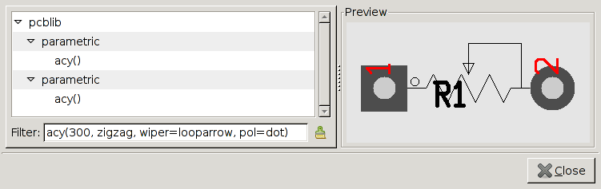

pcb-rnd - the [pcb-fp] patch
Pcb-fp is an effort to clean up the footprint situation:
- replace lib and newlib with pcblib, a library that tries to provide common footprints only
- clear the syntax: if a footprint name contains parenthesis, it's generated (parametric footprint), else it's the name of a static footprint file
- parametric footprints: replace m4 with a generic, language-independent footprint generator framework
- implement libpcb_fp, which centralizes searching and loading footprints
- fork gsch2pcb to gsch2pcb-rnd that uses libpcb_fp (and does not have any m4 references hardwired)
- fork gnet_gsch2pcb.scm (the gnetlist backend) to remove m4 heuristics
Example
Intaractive parametric footprint selection in pcb-rnd:

An online footprint generator web1.0 version is also available.
save/load and compatibility
Save/load files are not affected. If a schematics is written for the new
library and depends on parametric footprints:
- mainline gsch2pcb won't find those footprints
- mainline pcb won't show those footprints in the footprint selection dialog
plans
No plans - this feature is fully implemented.